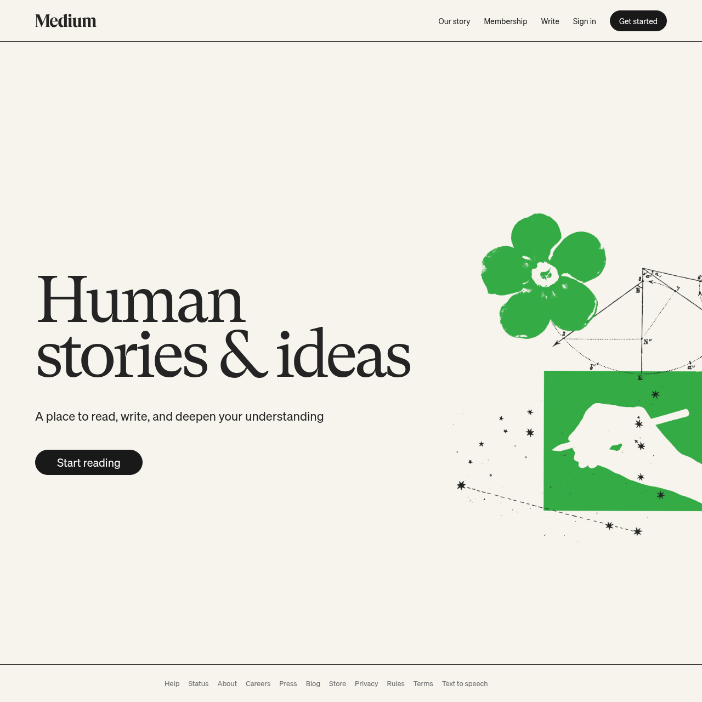

크림색 종이 위의 GT Super 마스트헤드
Medium은 "소프트웨어를 배우게 된 문예지"처럼 읽힌다. 로그아웃 홈페이지는 순백이 아니라 따뜻한 종이색 #F7F4ED 위에서 열리고, 단 하나의 세리프 헤드라인 "Human stories & ideas"가 GT Super로 최대 120px, 순흑 #000000, 자간 -0.055em으로 모든 말을 대신한다. SaaS 랜딩의 히어로가 아니라 신문의 제호(masthead)다.
정체성은 두 개의 타입 인격 사이의 긴장이다. 고대비 세리프 GT Super가 브랜드 보이스(워드마크 · 헤드라인)를, 클린 그로테스크 Söhne가 모든 기능 표면(내비 · 서브타이틀 · 버튼 · 푸터)을 맡는다. 제3의 목소리는 없다. 읽기 경험 자체는 Charter라는 또 다른 세리프로 돌아간다 — 세 폰트, 세 역할, 겹침 없음.
색은 배급제다. 브랜드는 단 하나의 잔디 그린 #1A8917이며 크롬 위에는 거의 나타나지 않는다. 손그림 일러스트, 인라인 링크, 기본 버튼의 한 가지 변형에만 산다. 나머지는 전부 잉크 — 본문 #242424, 보조 #6B6B6B. 페이지에는 box-shadow도 gradient도 0개이며, 구조는 1px 규칙선으로 그려진다. 그것도 옅은 회색이 아니라 신문이 단을 가르듯 거의 검은 #242424 헤어라인이다.
버튼만이 유일하게 부드럽다. 모두 99em 풀 캡슐 pill이고, 그 외 모든 모서리는 직각(0)이다. pill과 사각의 이중성이 이 사이트의 조용한 시그니처다. 기본 CTA는 한 컴포넌트에서 두 스킨으로 출고된다 — 그린 pill(#1A8917 → hover #156D12)과 거의 검은 pill(#191919 → #000000), 둘 다 196px.
모션은 거의 없다. 트랜지션은 background-color / color에 한정되고 300ms linear뿐 — transform도, 애니메이션 그림자도 없다. 페이지는 연기하지 않는다. 인쇄된 표지처럼 가만히 앉아 타이포그래피를 믿는다.
Medium — --color-
URL 하나로 추출한 실제 CSS 토큰 기반 디자인 시스템 리포트. hard-coded 색·폰트·여백이 아니라 라이브 사이트의 값 그대로 — 따뜻한 종이 위 GT Super 마스트헤드와 단 하나의 그린.

h1, .display { font-family: "gt-super", Georgia, Cambria, serif; letter-spacing: -0.055em; color: #000000; }
/* warm cream, NOT white */
body { background: var(--bg); color: var(--fg); }
--brand: #1A8917;
--brand-hover: #156D12;
}
#FFFFFF 순백으로 두지 마라. Medium의 정체성은 따뜻한 종이색 #F7F4ED다 — 순백으로 바꾸는 순간 "잡지"가 "앱 대시보드"가 된다.
출처와 수집 기준
CSS 커스텀 프로퍼티 + atomic 클래스 직접 파싱으로 추출. AI 추론 없음.
https://medium.com20260625215241id_unbound.css, 19KB 폰트 정의) + 15 인라인 <style> 블록, 총 ~27,000자--color-테크 스택
Next.js SSR + styled-components atomic 클래스 위의 semantic CSS-variable 시스템.
data-rh React-Helmet hydration 마커)--color-, src/styles/colors/global.ts에서 미러링.cl = sohne, .em = bg #1A8917) — generated, not BEMcolor-scheme: light 강제, enable_dark_mode_v0 gate OFFglyph.medium.com/css/unbound.css @font-face (sohne, charter, gt-super, source-code-pro …)--color-fg-accent-primary: #1a8917 — 브랜드 그린#F7F4ED cream / app · reading #FFFFFF타이포그래피
두 타입 인격을 엄격히 분리 — GT Super(serif) 브랜드 보이스 + Söhne(sans) 기능 표면. weight 600은 부재, 300/400/500/700만. 헤드라인은 커질수록 자간이 더 타이트해진다.
gt-super (GT Super, Grilli Type — 유료) · hero 헤드라인 + 워드마크sohne (Söhne, Klim Type Foundry — 유료) · 내비 / 서브타이틀 / 버튼 / 푸터charter (Charter, Matthew Carter — 자유) · 아티클 본문source-code-pro (Adobe — open source)-0.05em @70px → -0.055em @80–120px) — 커질수록 더 조인다. 본문/UI는 기본 자간 0 유지. 헤드라인 숫자는 font-feature-settings: 'pnum' on, 'lnum' on으로 비례 라이닝 숫자를 사용한다. 순흑 #000000은 오직 hero 헤드라인 한 곳에만, 나머지 텍스트는 #242424.컬러
단 하나의 잔디 그린 #1A8917 + 잉크 중립 램프 + 크림/화이트 이중 표면. 두 번째 브랜드 컬러는 없다.
Semantic (error)
Borders / Hairlines
Dominant Colors (실제 CSS 빈도)
#1A8917 단 하나다. raw CSS의 다른 채도 hex(#0E0EFF, #AA0D91, #5C2699, #643820, #C41A16 …)는 코드블록 .hljs-* 신택스 하이라이팅 테마에서 온 것으로 브랜드 색이 아니며 팔레트에서 제외했다.스페이싱
밀도가 아니라 공기에 공간을 쓴다. side 마진은 뷰포트에 따라 24 → 48 → 64px로 벌어지고, 텍스트 단은 720px로 고정.
padding: 25px 0; min-height: 75px · hero block: margin: 75px {24|48|64}px 0. nav와 hero 사이 75px 간격은 페이지가 말하기 전에 들이쉬는 숨이다.라디우스 (모서리 반경)
중간값이 없다. 인터랙티브 요소는 pill(99em)과 원(50%), 모든 표면은 하드 0. pill과 사각의 이중성이 시그니처.
섀도우 (그림자 0개)
N/A — Medium 홈페이지는 box-shadow를 단 한 개도 쓰지 않는다. 이 부재는 누락된 데이터가 아니라 의도된 정체성이다.
#242424 / light #E5E5E5. 깊이는 그림자가 아니라 잉크 선으로 그린다.모션
모션은 linear이며 절대 ease 없음, 그리고 color에만 한정 — transform도 애니메이션 그림자도 없다. 페이지 위 유일한 키프레임은 로딩 스피너.
레이아웃 패턴
1192px 컨테이너 · flexbox 기반 · 2-zone hero split(좌측 텍스트 + 우측 floating 일러스트). 카드 chrome 없음.
Grid System
- Content max-width: 1192px (nav / page container
.bh) - Grid type: Flexbox (atomic
.g{display:flex}, hero에 CSS Grid 없음) - Columns: hero = 2 zones (text + absolute 일러스트)
- Gutter: side margin
24 / 48 / 64px반응형
Hero
- Pattern: min-height 560px + 단색 cream + 좌측 GT Super H1 + pill CTA + 우측 absolute 일러스트
- Background: 단색
#F7F4ED(gradient / noise / overlay 없음) - H1: 70–120px / weight 400 / ls -0.05→-0.055em /
#000000 - Max-width: 720px (텍스트 단)
Section Rhythm
- Hero: cream 단색 + overflow hidden
- Margin: 75px top / 64px side / 0 bottom
.hero {
background: #F7F4ED; /* cream */
min-height: 560px;
margin: 75px 64px 0; /* top, side, bottom */
overflow: hidden;
}Card Patterns
- 홈페이지 hero에 카드 컴포넌트 없음 — 우측은 일러스트 1개, 카드 그리드 아님
- 피드(이 페이지 밖)는 리스트 항목을 헤어라인 규칙선으로 구분 — radius/shadow 없음
- LOHP에는 없음 — 카드 chrome을 지어내지 말 것
Navigation
- Type: 수평 바, 링크 + 다크 pill CTA
- Position:
fixed; top:0; left:0; right:0 - Height: 75px (
padding: 25px 0) - Border:
border-bottom: solid 1px #242424— 시그니처 near-black 규칙선 - Container: max-width 1192px, logo 25px (
fill: #242424)
Content Width
- Prose / reading: 680–720px (Medium 리딩 measure)
- Container: 1192px
- Footer: 680px
반응형
mobile-first atomic 클래스 · 헤드라인은 120→70px로 줄고 자간은 -0.055→-0.05em으로 풀린다 · 큰 타입, 더 타이트한 set의 광학 보정.
-0.055em → -0.05em64 → 48 → 24pxoverflow:hidden으로 clip — 큰 사이즈에서 우측으로 bleed컴포넌트
한 컴포넌트 shape에서 나온 두 pill 스킨(다크 / 그린) + nav-link. 모두 border-radius: 99em, 1px 보더, 흰 텍스트, transition: background-color 300ms linear.
<button class="pill pill--dark">Get started</button>
<button class="pill pill--green">Start reading</button>
solid 1px #242424 헤어라인.<a class="nav__link">Our story</a>
라이팅 원칙
문예적이고 따뜻하며 서두르지 않는 — SaaS 피치가 아니라 발행인의 목소리.
CSS / Tailwind 내보내기
그대로 복사해 프로젝트에 붙여 넣을 수 있는 Drop-in 스니펫. (Medium 자체는 styled-components를 쓰며 Tailwind는 편의 변환.)
/* Medium — copy into your root stylesheet */
:root {
/* Fonts */
--font-display: gt-super, Georgia, Cambria, "Times New Roman", Times, serif;
--font-body: sohne, "Helvetica Neue", Helvetica, Arial, sans-serif;
--font-reading: charter, Georgia, serif;
--font-code: source-code-pro, Menlo, Monaco, monospace;
--font-weight-normal: 400;
--font-weight-bold: 700;
/* Brand */
--color-brand: #1A8917; /* accent-green - canonical */
--color-brand-hover: #156D12; /* accent-green-hover */
--color-brand-bg: #E8F3E8; /* accent-bg-quaternary */
/* Surfaces */
--bg-marketing: #F7F4ED; /* surface-cream - NOT white */
--bg-app: #FFFFFF; /* surface-white */
--bg-secondary: #F2F2F2; /* surface-secondary */
--text: #242424; /* ink */
--text-muted: #6B6B6B; /* ink-muted */
--text-display: #000000; /* pure-black - headline only */
--pill-dark: #191919; /* pill-dark */
/* Borders */
--rule-strong: #242424; /* 1px nav/footer rule */
--rule-light: #E5E5E5;
/* Spacing */
--space-sm: 16px;
--space-md: 24px;
--space-lg: 48px;
--space-xl: 64px;
/* Radius */
--radius-pill: 99em;
--radius-circle: 50%;
/* Motion */
--transition: background-color 300ms linear, color 300ms linear;
}
body { background: var(--bg-marketing); color: var(--text); font-family: var(--font-body); font-weight: 400; }
h1 { font-family: var(--font-display); color: var(--text-display); letter-spacing: -0.055em; }
.btn { border-radius: var(--radius-pill); border: 1px solid var(--pill-dark); background: var(--pill-dark); color: #fff; padding: 8px 16px; transition: var(--transition); }
.btn:hover { background: #000; }
.btn--green { background: var(--color-brand); border-color: var(--color-brand); }
.btn--green:hover { background: var(--color-brand-hover); border-color: var(--color-brand-hover); }
nav { border-bottom: solid 1px var(--rule-strong); }// tailwind.config.js — Medium
module.exports = {
theme: {
extend: {
colors: {
brand: { DEFAULT: '#1A8917', hover: '#156D12', bg: '#E8F3E8' },
cream: '#F7F4ED',
ink: { DEFAULT: '#242424', muted: '#6B6B6B', pure: '#000000' },
pill: '#191919',
rule: { strong: '#242424', light: '#E5E5E5' },
error: '#C94A4A',
},
fontFamily: {
display: ['gt-super', 'Georgia', 'serif'],
sans: ['sohne', 'Helvetica Neue', 'Arial', 'sans-serif'],
reading: ['charter', 'Georgia', 'serif'],
mono: ['source-code-pro', 'ui-monospace'],
},
fontWeight: { normal: '400', bold: '700' },
borderRadius: { pill: '99em', circle: '50%' },
transitionTimingFunction: { medium: 'linear' },
},
},
};에이전트 가이드
AI 에이전트가 이 디자인 시스템으로 구현할 때 참조하는 Quick reference.
Example Component Prompts
Medium 스타일 히어로 섹션을 만들어줘. - 배경: #F7F4ED 단색 (그라디언트/그림자 없음), min-height 560px - H1: gt-super serif, 80~120px, weight 400, tracking -0.055em, color #000000, 좌측 정렬 - 서브텍스트: sohne, 22px, color #242424 - CTA: pill 버튼 (border-radius 99em), 배경 #191919(또는 그린 #1A8917), 흰 텍스트, padding 8px 20px, width 196px - 우측: 손그림 일러스트 1개 (absolute, bleed) - 텍스트 컬럼 max-width: 720px
Medium 스타일 상단 네비를 만들어줘. - position: fixed, height 75px, 배경 #F7F4ED - 하단 border: solid 1px #242424 (옅은 회색 아님!) - 로고: 좌측, 25px 높이, fill #242424, gt-super serif 워드마크 - 링크: sohne 14px/20px, color #242424, 간격 25px - CTA: 우측, 다크 pill (#191919, hover #000000)
Medium 스타일 pill 버튼을 만들어줘. - border-radius: 99em (완전 캡슐), border 1px - 다크: bg #191919, text #fff, hover bg #000000 - 그린: bg #1A8917, text #fff, hover bg #156D12 - padding 8px 20px, font sohne 16px weight 500 - transition: background-color 300ms linear (transform 없음)
Medium 스타일 구분선/구조. - box-shadow 금지 — 그림자 0개 - nav/footer 구분: solid 1px #242424 - 옅은 divider: 1px #E5E5E5 - 깊이는 그림자가 아니라 잉크 선으로만 - gradient 금지 — 단색 fill만
- 색상 변경 시: brand green
#1A8917은 accent/CTA/링크에만. 본문엔 절대 쓰지 말 것. 마케팅 배경은#F7F4ED고정. - 폰트 변경 시: display=GT Super(serif), body=Söhne(sans), reading=Charter(serif). 셋을 섞지 말 것. weight는 300/400/500/700만 — 600 금지.
- 여백 조정 시:
8 / 16 / 24 / 48 / 64 / 75px스케일만. - radius: 버튼
99em, 원형50%, 나머지0. 중간값(8~12px) 금지. - 깊이 표현: box-shadow 금지 — 1px
#242424또는#E5E5E5보더로만.
Do / Don't
실제 CSS에서 검증된 규칙만 수록.
DO
- 마케팅 표면은 따뜻한 크림
#F7F4ED, 앱/리딩 표면은#FFFFFF로 분리할 것 - GT Super(serif display) + Söhne(sans body)를 짝지을 것 — 역할 고정
- 모든 버튼을 pill(
border-radius: 99em)로 만들 것 - nav/footer 구분은
1px solid #242424하드 라인으로 그릴 것 - 본문 텍스트
#242424, 보조#6B6B6B, 헤드라인만#000000 - 브랜드 그린
#1A8917, hover#156D12— accent/CTA/링크에만 - display tracking
-0.055em(큰 사이즈일수록 더 타이트하게)
DON'T
- 마케팅 배경을
#FFFFFF또는 white로 두지 말 것 — 대신#F7F4ED - 본문 텍스트를
#000000/black으로 두지 말 것 —#242424사용 (순흑은 hero 전용) font-weight: 600사용 금지 — Medium은 500 다음 700 (600 부재)- 버튼을
border-radius: 8px같은 고정 px로 두지 말 것 —99em - nav/footer 강조 라인을
#E5E5E5옅은 회색으로 두지 말 것 —#2424241px box-shadow로 깊이 만들지 말 것 — 그림자 0개, 1px 보더만linear-gradient/radial-gradient금지 — 단색 fill만- 브랜드 그린을 본문/chrome 전반에 쓰지 말 것 — accent 전용
- hover에
transform/scale/box-shadow금지 —background-color 300ms linear만
- Box-shadow: zero — 1px 헤어라인이 모든 구조 작업을 한다
- Gradients: none — 모든 표면에 단색 fill만
- Weight 600: absent — 300 / 400 / 500 / 700만
- Mid-range radius: none —
99empill과50%circle뿐, 표면은0 - Pure black on body text: never —
#000000은 hero 헤드라인 한 곳뿐 - Transform / scale hover: none — 인터랙션은 color-only,
300ms linear - Second brand color: none —
#1A8917이 유일한 채도 브랜드 값 - Card chrome on homepage: none — 일러스트 + 타입이 hero를 운반
- Eased motion: none — 모든 transition은
linear
20260625215241)에서, 렌더 스크린샷은 라이브 사이트에서 수집(약 1일 차). green vs black CTA는 한 컴포넌트에서 둘 다 출고되며 어느 브레이크포인트/A·B 버킷에서 무엇이 렌더되는지 미확정. 브레이크포인트(~728 / ~1080 / ~1304px)는 헤드라인 스케일 클래스에서 역산한 근사값. 다크 모드 / 폼 컴포넌트 / 리딩 타이포는 이 경로에서 미관측.